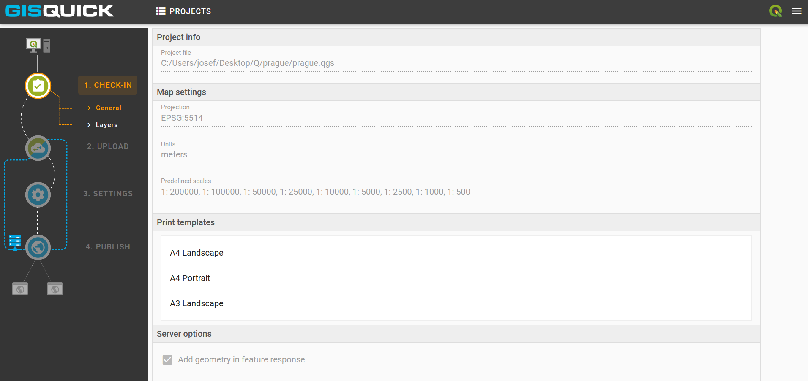
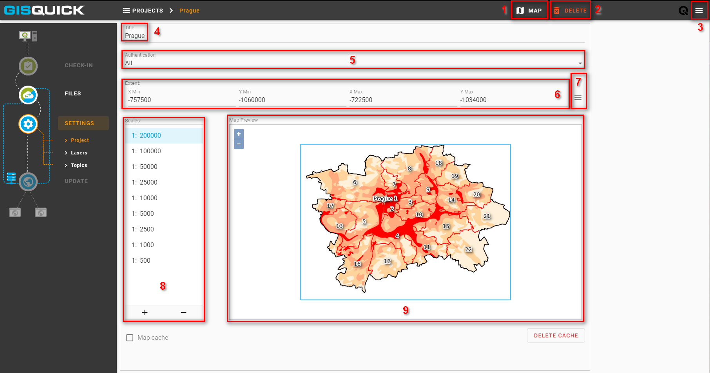
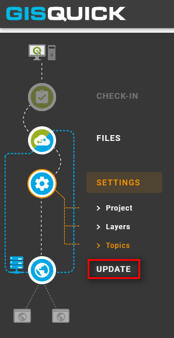

Publishing¶
This section describes the proccess of uploading and publishing QGIS project to Gisquick. It is assumed that QGIS Gisquick plugin is installed, connected to Gisquick server (see Before publishing) and project is prepared and ready to be published.
Once the project in QGIS is ready, click on the Gisquick plugin logo.
If the user is already connected to publication server (see QGIS Gisquick plugin),
green message pane will appear.
Otherwise, fill in the connection and Gisquick login details. Then click on Open browser.
{kind=link}
The user’s profile page profile page opens in browser. Click on NEW PROJECT.

Important
 When using flat files or file-based databases as
data stores it is highly recommended to save all the files (data and QGIS
project) in the same directory or its subdirectory. QGIS project must be
set up to use relative paths (see Project Properties). An
error warning appears otherwise (see figure below).
When using flat files or file-based databases as
data stores it is highly recommended to save all the files (data and QGIS
project) in the same directory or its subdirectory. QGIS project must be
set up to use relative paths (see Project Properties). An
error warning appears otherwise (see figure below).
When using any kind of authentication (databases, web services) it must be ensured that the server used for publishing will have access rights to such data sources.
{kind=link}
EDIT ↓
After succesful check-in to the Gisquick server, the project is screened in user’s experimental publish window. Notice, that the Gisquick 2 icon stays active in QGIS until the user clicks on it again and interrupts the connection with the server.
{kind=link}
The first section called CHECK-IN consists of two tabs and represents
an overview which is designed to easily check on loaded layers. It is not
possible to make any changes within these tabs. Eventual corrections
could be made back in QGIS.
First tab General includes some fundamental information about user’s
project, e.g. map projection, units, predefined scales or print templates.
Second tab Layers contains a list of layers with additional information.
When the project is checked and ready, proceed to the Upload section.
Two windows will split the screen: local project files are listed in the left,
intended server folder appears in the right one. Click on UPLOAD FILES button.

Publishing project¶
EDIT ↓
This chapter follows up on chapter 2. Publishing and represents last steps of project publishing.
A section called SETTINGS is displayed. There are a few
options in the settings window. It is possible to load map canvas using the
map button (1). Use the delete button (2) in case of removing the whole project.
For logging out find the top right button (3).
Furthermore, it is possible to change the project title (4), set the
rate of authentication (5) or edit map extent setting (6). There are few
possibilities how to edit map extent (7). The first is to fill in the
desired coordinates into the frames. The second possibility, the map extent can be edited
manually by drawing a delimiting rectangle area ina map. The last option is to
use the extent of one imported layer or extent of all of them.
Setting map scales is possible in the left box (8). Executed changes are
reflected in map preview (9).
all possible project settings/possibilities are described further in chapetr??
{kind=link}

Check the subsection Layers for advanced adjustment of layers. The base layer can be chosen in the left box (a blank base map is default). Within the right box, it is possible to specify which layers will be published or hidden (or both which means that the layer will be published but turned off when the project is opened).

The last subsection is dedicated to topics. Creating or removing a topic is enabled. Select a topic to see involved features which can be subsequently modified.

In the very last step, hit the update button to save all realized changes and finish the publishing process.
{kind=link}